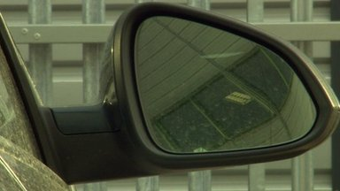

2 April 2014 Last updated at 14:13
Pollution to Spread across England
Health warnings have been issued by the government as pollution spreading across England is forecast to hit high levels.
Why are pollution levels so high?
NEWSUK
2 April 2014 Last updated at 14:13
Health warnings have been issued by the government as pollution spreading across England is forecast to hit high levels.
Why are pollution levels so high?